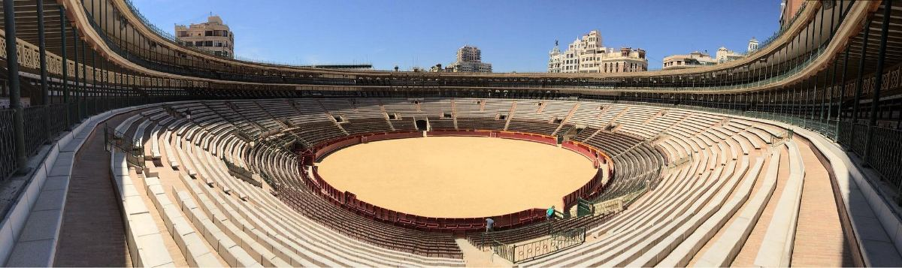

El blog del verano
Blog de planes en Torremolinos y Málaga
Ideas, guías y novedades sobre los mejores planes de verano en Torremolinos y Málaga. Todo lo que pasa en la Plaza de Toros, contado desde dentro.
Últimas publicaciones
Destacado


Los mejores planes de verano en Torremolinos: llega Plaza Paraíso 2026
La Plaza de Toros de Torremolinos se transforma en el punto de encuentro del verano: conciertos, teatro, gastronomía y ocio al aire libre del 25 de julio al 13 de septiembre. Repasamos todos los planes evento a evento y cómo se transforma el recinto.
Leer el artículo
Ocio
Dónde salir de fiesta en Torremolinos: la guía 2026
Paseo marítimo, La Nogalera, Pueblo Blanco y la Plaza de Toros: las cuatro zonas para salir de fiesta en Torremolinos, con horarios, ambiente y la novedad de Plaza Paraíso.
Leer el artículo
Música


Laura Gallego en Torremolinos: «La Última Folclórica» llega a Plaza Paraíso
La última gran folclórica de España actúa al aire libre en la Plaza de Toros de Torremolinos el 7 de agosto de 2026. Copla, electrónica y fiesta en uno de los grandes conciertos del verano en Málaga.
Leer el artículo
Grupos
Actividades para grupos en Málaga este verano: los planazos de Plaza Paraíso
Loco Bongo, Furor The Show y Bresh son los mejores planes para venir con amigos a Torremolinos: tardeo, concursos y la fiesta más linda del mundo, al aire libre en la Plaza de Toros.
Leer el artículo
Ocio
Furor The Show llega a Málaga: cómo funciona el concurso musical en directo
El concurso musical de la tele, ahora en directo y presentado por Alonso Caparrós, al aire libre en la Plaza de Toros de Torremolinos. Te contamos cómo funciona.
Leer el artículo
Teatro

Las Pilardos en Málaga: «Operación Marbella» llega a Torremolinos
La comedia más gamberra de Le Cocó y Megüi Yeillow llega al aire libre a la Plaza de Toros de Torremolinos. Sinopsis, biografía de las artistas y entradas.
Leer el artículo
Guía
Los 20 mejores planes para hacer en Málaga este verano
Festivales, playas, gastronomía y ocio: la guía definitiva de la Costa del Sol para 2026, con Plaza Paraíso en Torremolinos como plan estrella del verano.
Leer el artículo
Torremolinos

5 curiosidades de la plaza de toros de Torremolinos que (casi) nadie conoce
Historia, arquitectura, su reinvención como espacio de ocio y el festival que la llena este verano. Los secretos mejor guardados de uno de los espacios más singulares de la Costa del Sol.
Leer el artículo
Guía

Cómo pasar un día perfecto en Torremolinos: guía hora por hora
Playa, espetos, beach club, tardeo y festival: el itinerario para exprimir un día completo en Torremolinos, de la mañana en la Calle San Miguel a la tarde-noche en la Plaza de Toros.
Leer el artículo
Nos vemos en la plaza
No te quedes sin tu plan de verano
Las entradas para los eventos de Plaza Paraíso ya están a la venta. Consigue tu sitio para vivir el mejor verano en Torremolinos.